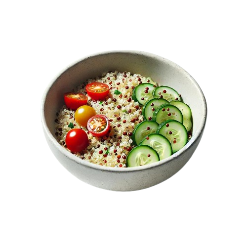
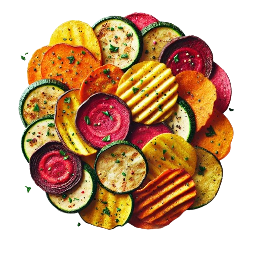

Healthy Recipes
Welcome to our collection of healthy recipes! Each recipe is designed to be nutritious, affordable, and easy to make. Whether you're looking for breakfast, lunch, or dinner ideas, you'll find a variety of options here.
Avocado Toast with a Twist
This recipe adds a protein-packed twist to your classic avocado toast with the addition of poached eggs and cherry tomatoes.

Ingredients:
- 2 slices of whole-grain bread
- 1 ripe avocado
- 2 eggs
- 6 cherry tomatoes (halved)
- 1 tablespoon olive oil
- 1 teaspoon lemon juice
- Salt and pepper to taste
- Optional: Chili flakes and parsley for garnish
Instructions:
Prepare the Base: Toast the whole-grain bread slices until golden brown.
Make the Avocado Spread: Scoop the avocado into a bowl. Add lemon juice, salt, and pepper. Mash until smooth but slightly chunky.
Cook the Eggs: Poach the eggs by simmering water with a splash of vinegar, then gently sliding the eggs into the water and cooking for 3-4 minutes.
Assemble the Toast: Spread the avocado mixture on the toasted bread. Top with poached eggs and halved cherry tomatoes. Drizzle with olive oil.
Garnish: Sprinkle with chili flakes and parsley, if desired.
Quinoa Salad Bowl
This recipe combines quinoa, fresh veggies, and a zesty lemon-tahini dressing for a refreshing and nutritious meal.

Ingredients:
- 1 cup quinoa (cooked and cooled)
- 1 cup cherry tomatoes (halved)
- 1 cup cucumber (diced)
- 1/4 cup red onion (finely chopped)
- 1/4 cup parsley or cilantro (chopped)
- 2 tablespoons olive oil
- 1 tablespoon lemon juice
- Salt and pepper to taste
- Optional: Feta cheese or nuts for garnish
Instructions:
Prepare the Quinoa: Rinse quinoa under cold water, then cook according to package instructions. Let cool.
Combine Ingredients: In a large bowl, mix quinoa, cherry tomatoes, cucumber, red onion, and parsley.
Make the Dressing: Whisk together olive oil, lemon juice, salt, and pepper in a small bowl.
Assemble the Salad: Drizzle the dressing over the quinoa mixture and toss gently to combine.
Garnish: Add feta cheese or nuts, if desired, before serving.
Oven-Baked Veggie Chips
A healthier, homemade version of chips made with fresh veggies and a touch of olive oil.

Ingredients:
- 1 large sweet potato
- 1 zucchini
- 1 large carrot
- 2 tablespoons olive oil
- 1 teaspoon paprika
- 1/2 teaspoon garlic powder
- Salt and pepper to taste
Instructions:
Preheat Oven: Preheat the oven to 200°C (400°F) and line a baking tray with parchment paper.
Slice the Vegetables: Thinly slice the sweet potato, zucchini, and carrot using a mandoline or a sharp knife.
Season: In a bowl, toss the vegetable slices with olive oil, paprika, garlic powder, salt, and pepper.
Bake: Spread the slices in a single layer on the baking tray. Bake for 15-20 minutes, flipping halfway through, until crispy.
Cool and Serve: Allow the veggie chips to cool slightly before serving.